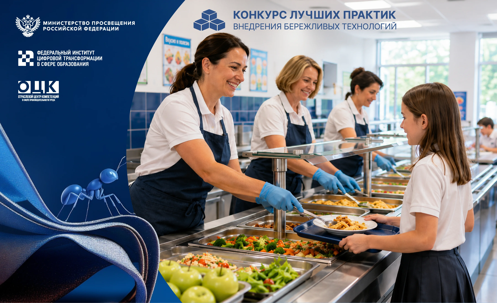
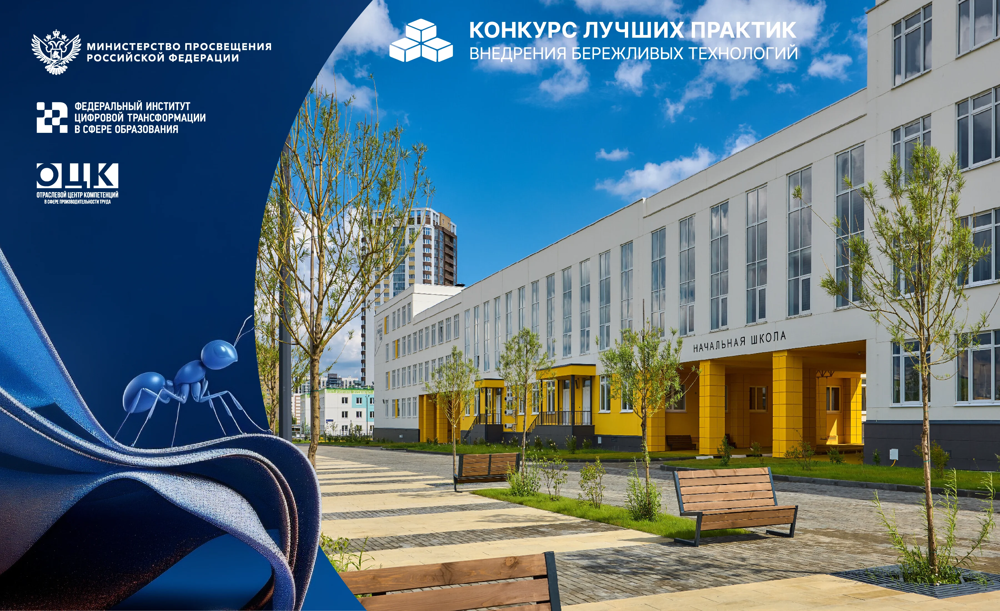
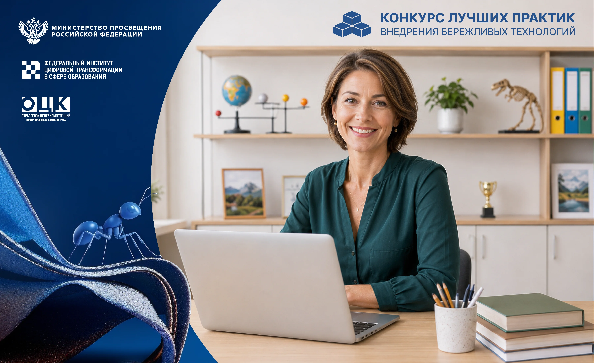
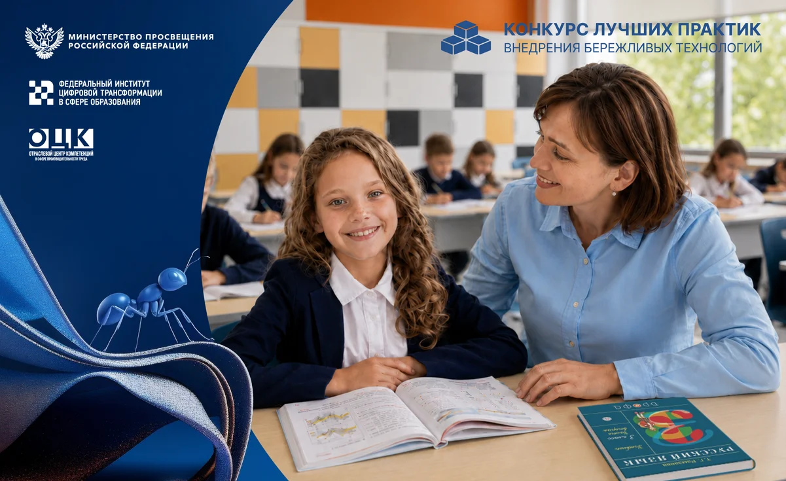
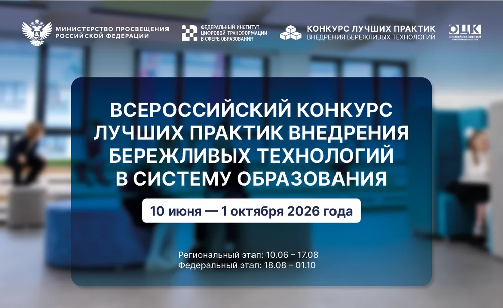

Продолжается приём заявок на Всероссийский конкурс лучших практик внедрения бережливых технологий в систему образования в 2026 году. Учредителем конкурса является Минпросвещения России, организатором выступает Федеральный институт цифровой трансформации в сфере образования (ФГАНУ «ФИЦТО»).
Одна из номинаций конкурса — «Централизация или аутсорсинг вспомогательных процессов».
Речь идёт не просто об экономии, а о повышении производительности труда и качества деятельности учреждения за счёт оптимизации ресурсов.
Образовательные учреждения могут передавать на внешнее исполнение широкий спектр задач:
- обслуживание зданий и инженерных систем (вентиляция, водоснабжение)
- организация горячего питания и медицинского обслуживания
- комплексная уборка, охрана и содержание территорий
- ведение бухгалтерского учёта
- организация доставки детей в образовательные учреждения
- и другое.
В 2026 году уже 10 образовательных организаций внедрили лучшую практику по централизации бухгалтерского учёта, а ещё пять выбрали комплексное коробочное решение «Централизация и аутсорсинг вспомогательных процессов».
Результаты внедрения лучшей практики:Повышение качества бюджетного (бухгалтерского) учёта; снижение расходов на содержание работников бухгалтерской службы; минимизация рисков, связанных с отсутствием сотрудника бухгалтерской службы (вакантная должность, время отпуска, временная нетрудоспособность); уменьшение количества нарушений при ведении бюджетного (бухгалтерского) учёта; организации закупочной деятельности; контроль соблюдения порядка оформления первичных учётных документов.
«Аутсорсинг вспомогательных процессов позволяет образовательной организации сосредоточиться на своей главной задаче — обучении и воспитании детей. Передавая специализированным организациям непрофильные функции, мы повышаем качество их исполнения, снижаем административную нагрузку и высвобождаем ресурсы для развития образовательной среды».
Как принять участие в конкурсеПриём заявок осуществляется в два этапа:
- Региональный этап — с 10 июня по 17 августа 2026 года
- Федеральный этап — с 18 августа по 1 октября 2026 года
На конкурс могут быть заявлены практики по завершённым проектам в сфере централизации или передачи на аутсорсинг вспомогательных процессов.
Для участия в региональном этапе образовательным организациям необходимо направить заявку и конкурсные материалы региональному оператору. Подробности участия и порядок подачи документов можно уточнить в региональном министерстве образования.
Координацию работ по распространению бережливого производства в сфере образования на федеральном уровне осуществляет Отраслевой центр компетенций (ОЦК) Минпросвещения России на базе ФИЦТО. На платформе производительность.рф уже размещены лучшие практики по оптимизации процессов в образовании, адаптированные под задачи конкретных учреждений.
ФГАНУ «Федеральный институт цифровой трансформации в сфере образования» приказом Минпросвещения России определено организацией по исполнению функций отраслевого центра компетенций в сфере производительности труда для распространения бережливого производства в сфере образования. Данная работа осуществляется в рамках федерального проекта «Производительность труда» (национальный проект «Эффективная и конкурентная экономика»).

Напоминаем, что в России продолжается приём заявок на конкурс лучших практик внедрения бережливых технологий в систему образования в 2026 году. Учредителем конкурса является Минпросвещения России, организатором выступает Федеральный институт цифровой трансформации в сфере образования (ФГАНУ «ФИЦТО»).
Конкурс проводится по шести номинациям. Одной из них является «Создание образовательных комплексов». В 2026 году 256 образовательных организаций выбрали лучшие практики по оптимизации процессов при создании образовательных комплексов на основе инструментов бережливого производства. Кроме того, в текущем году 16 образовательных организаций приступили к внедрению коробочного решения «Создание образовательных комплексов». На конкурс могут быть заявлены практики по завершенным проектам.
«Создание образовательных комплексов — это не просто объединение организаций, а возможность выстроить бесшовную образовательную траекторию от детского сада до школы и колледжа. Интеграция позволяет снять напряжённость при переходе ребёнка из детского сада в школу, выровнять ресурсное обеспечение и создать единое образовательное пространство. Наши практики помогают образовательным организациям пройти этот путь с минимальными затратами».
В перечень лучших практик направления вошли решения, доказавшие свою эффективность. Среди них — оптимизация трудовых ресурсов при создании образовательных комплексов, организация воспитательной работы в образовательном комплексе при реорганизации и оформление локальных нормативных актов в процессе реорганизации детских садов путём объединения.
Эти и другие практики позволяют оптимизировать деятельность объединённого комплекса за счёт перераспределения нагрузки, устранения дублирующих функций и приведения штатного расписания в соответствие с реальными потребностями. Например, в ГБПОУ Астраханской области «Астраханский губернский техникум» реализация проекта по созданию образовательного комплекса ключевым результатом стала оптимизация деятельности объединённого комплекса за счёт перераспределения нагрузки и устранения дублирующих функций.
Как принять участие в конкурсеПриём заявок осуществляется в два этапа:
- Региональный этап — с 10 июня по 17 августа 2026 года
- Федеральный этап — с 18 августа по 1 октября 2026 года
Для участия в региональном этапе образовательным организациям необходимо направить заявку и конкурсные материалы региональному оператору. Подробности участия и порядок подачи документов можно уточнить в региональном министерстве образования.
Координацию работ по распространению бережливого производства в сфере образования на федеральном уровне осуществляет Отраслевой центр компетенций (ОЦК) Минпросвещения России на базе ФИЦТО. На платформе производительность.рф уже размещены лучшие практики по оптимизации процессов в образовании, адаптированные под задачи конкретных учреждений.
ФГАНУ «Федеральный институт цифровой трансформации в сфере образования» приказом Минпросвещения России определено организацией по исполнению функций отраслевого центра компетенций в сфере производительности труда для распространения бережливого производства в сфере образования. Данная работа осуществляется в рамках федерального проекта «Производительность труда» (национальный проект «Эффективная и конкурентная экономика»).

В России стартовал приём заявок на конкурс лучших практик внедрения бережливых технологий в систему образования в 2026 году. Учредителем конкурса является Минпросвещения России, организатором выступает Федеральный институт цифровой трансформации в сфере образования (ФГАНУ «ФИЦТО»).
Конкурс проводится по шести номинациям. Одной из них является «Дебюрократизация процессов». Это направление в 2026 году стало одной из самых востребованных среди образовательных организаций — участников федерального проекта «Производительность труда» национального проекта «Эффективная и конкурентная экономика». Из более чем 10 000 учреждений, включённых в программу, 5 192 выбрали лучшие практики по оптимизации административных и отчётных процессов на основе инструментов бережливого производства. Именно эти практики образовательные организации смогут представить на конкурсе.
«Направление «Дебюрократизация процессов» в этом году стало одним из самых популярных — его выбрали более 5 000 образовательных организаций. Это говорит о том, что запрос на упрощение отчётности и документооборота действительно есть в системе образования. Наши практики позволяют сократить временные и трудовые затраты, высвобождая ресурсы для главного — для работы с детьми».
Дебюрократизация оказалась востребована у широкого спектра образовательных организаций: школы, детские сады, колледжи и учреждения допобразования. Всего в этом направлении — более 20 апробированных решений, доказавших свою эффективность. Среди них — цифровизация работы с документами по обучающимся с ОВЗ, внедрение электронного документооборота, упрощение процедур зачисления в детские сады и колледжи, а также формирование расписания.
Эти и другие практики позволяют кратно сократить временные и трудовые затраты. Например, переход к электронной карте развития ребёнка с ОВЗ и общему цифровому реестру позволил заменить 30 бумажных документов тремя и сократить время оформления с 60 до 10 минут.
Как принять участие в конкурсеПриём заявок осуществляется в два этапа:
- Региональный — с 10 июня по 17 августа 2026 года
- Федеральный — с 18 августа по 1 октября 2026 года
Координацию работ по распространению бережливого производства в сфере образования на федеральном уровне осуществляет Отраслевой центр компетенций (ОЦК) Минпросвещения России на базе ФИЦТО.
ФГАНУ «Федеральный институт цифровой трансформации в сфере образования» приказом Минпросвещения России определено организацией по исполнению функций Отраслевого центра компетенций в сфере производительности труда для распространения бережливого производства в сфере образования. Конкурс лучших практик проводится в рамках федерального проекта «Производительность труда» национального проекта «Эффективная и конкурентная экономика».

В Федеральном институте цифровой трансформации в сфере образования (ФГАНУ «ФИЦТО») состоялся вебинар для исполнительных органов субъектов Российской Федерации, осуществляющих государственное управление в сфере образования, а также региональных операторов Всероссийского конкурса лучших практик внедрения бережливых технологий в систему образования. Мероприятие было организовано с целью синхронизации действий всех участников процесса и обеспечения единых стандартов приёма материалов на федеральный этап. Эксперты отраслевого центра компетенций (ОЦК) ФИЦТО детально разобрали алгоритм действий на региональном этапе конкурса, а также обратили особое внимание на критерии оформления конкурсной документации.
Как было отмечено в ходе встречи, региональный этап продлится с 10 июня по 17 августа 2026 года. Представители оргкомитета Всероссийского конкурса лучших практик внедрения бережливых технологий подчеркнули, что ключевой задачей субъектов является отбор лучших практик внедрения бережливых технологий в образовательных организациях региона для представления их на федеральном этапе конкурса.
Заместитель руководителя созданного на базе ФИЦТО ОЦК Минпросвещения России Татьяна Якубович, обращаясь к участникам вебинара, пригласила все 89 субъектов Российской Федерации к активному участию в конкурсе. Она напомнила региональным операторам о важном правиле: на федеральный этап от каждого субъекта может быть подан только один участник по каждой из шести номинаций. Таким образом, региональные экспертные комиссии должны провести тщательный отбор, чтобы представить на всероссийский уровень действительно сильнейшие практики от своего региона.
«Наш конкурс охватывает все типы образовательных организаций — от детских садов до колледжей, и мы ждём заявки от каждого субъекта. Важно понимать, что на федеральный этап выходит лучший из лучших в каждой номинации от региона. Это повышает ответственность региональных операторов за качество отбора и объективность оценки. Мы призываем коллег подойти к этому этапу максимально профессионально, ведь победители представят свои регионы на всероссийском уровне».
Всероссийский конкурс лучших практик внедрения бережливых технологий в систему образования в 2026 году проводится в соответствии с Приказом Министерства просвещения Российской Федерации от 10 июня 2026 г. № 407.
ФГАНУ «Федеральный институт цифровой трансформации в сфере образования» приказом Минпросвещения России определено организацией по исполнению функций Отраслевого центра компетенций (ОЦК) в сфере производительности труда для распространения бережливого производства в сфере образования. Данная работа осуществляется в рамках федерального проекта «Производительность труда» (национальный проект «Эффективная и конкурентная экономика»).

В России стартовал приём заявок на конкурс лучших практик внедрения бережливых технологий в систему образования в 2026 году. Учредителем конкурса является Минпросвещения России, организатором выступает Федеральный институт цифровой трансформации в сфере образования (ФГАНУ «ФИЦТО»).
Конкурс проводится по шести номинациям:
- Стандартизация штатного расписания;
- Дебюрократизация процессов;
- Создание образовательных комплексов;
- Централизация или аутсорсинг вспомогательных процессов;
- Оптимизация пространств в образовательных организациях;
- Реализация образовательных программ в сетевой форме.
«Внедрение бережливых технологий в образовании — это не про экономию ради экономии, а про освобождение ресурсов для главного: качественного обучения и развития детей. Снижение бюрократической нагрузки, грамотное зонирование пространств, оптимизация штатного расписания — всё это напрямую влияет на комфорт учеников и учителей. Наш конкурс поможет вовлечь образовательные организации в развитие принципов бережливого производства, сформировать бережливую среду и обеспечить обмен лучшими практиками».
Мероприятие проходит в два этапа:
- Региональный — с 10 июня по 17 августа 2026 года
- Федеральный — с 18 августа по 1 октября 2026 года
ФГАНУ «Федеральный институт цифровой трансформации в сфере образования» приказом Минпросвещения России определено организацией по исполнению функций Отраслевого центра компетенций (ОЦК) в сфере производительности труда для распространения бережливого производства в сфере образования. Данная работа осуществляется в рамках федерального проекта «Производительность труда» (национальный проект «Эффективная и конкурентная экономика»).

С 10 июня по 1 октября 2026 года проходит Всероссийский конкурс лучших практик внедрения бережливых технологий в систему образования. Конкурс направлен на выявление и распространение эффективных решений по применению инструментов бережливых технологий в образовательных организациях.
Организатор — Федеральный институт цифровой трансформации в сфере образования.